Wolf: 96 frames manually reviewed
Each actual painted frame was individually compared with its matching approved stick. Head, ruff, back and tail hold within groups of three, then change abruptly at group boundaries. Visible paw/support mismatches and uncertain hidden limbs are recorded below.
Each frame is an intact bitmap. The authoring instruction to freeze the upper body is withdrawn: shoulder, haunch, torso, neck, head, tail and fur must move together inside each drawing. Runtime ground travel remains straight.
Two complete-loop V11 pilots were generated from the original wolf and fresh whole-body controls. The second corrects a contradictory muzzle template. Both remain outside the motion lab because visible pose and whole-body coherence still fail. No rejected painting is used as a generation reference.
This is a static frame audit. It does not certify continuous-video perception, numerical contacts or production approval.
E / W: 24 frames reviewed
Frame-specific findings
# East / west manual frame comparison 2026-10-07, parent reviewer. Opened all 24 individual registered three-pane PNGs with the image viewer: E-01 through E-12 and W-01 through W-12. Each contains the actual active bitmap, the corresponding approved stick and an aligned overlay. No frame is inferred from its reflected source. Rechecked the numerical E paw table from the approved manifest. Left/right here mean anatomical sides, not screen sides. These are visual observations, not an independently measured contact pass. Hidden paws cannot be assigned exact painted coordinates from these small images. Every frame needs a coordinated-body repair; useful leg ideas do not approve the cycle. User correction at `6b57604`, confidence 98%: the screenshot is E-06. The rear-leg forward swing is not transferred to the painting. The guide connects hip `(80,140.44)` through its simplified knee `(91.49,148.55)` to paw `(91.95,161.14)`, forward under the belly. In the painting, the prominent paw in that central area belongs to a limb descending from the chest; the visible rear leg remains back beneath the rump. A paw near the target is not evidence of the correct leg when its attachment and joint path are wrong. The original E-05/E-06 wording understated or misclassified this defect. Trace hip/shoulder → joints → paw before accepting any future pose correspondence; mark obscured connections unverified. | Frame | Comparison with exact stick / drawing observation | | --- | --- | | E-01 | Near RH and RF read as planted; far LF lifting is mostly obscured under the chest. Far LH support is dark and difficult to identify. Intact broad-head silhouette, but head/ruff/back held. | | E-02 | Far forepaw advances, broadly matching LF swing; its underside sits below the high target. Near rear paw retracts; near front support remains. Upper outline repeats E-01 rather than sharing weight transfer. | | E-03 | Far forepaw reaches forward and rear near limb extends backward; general LF/RH swing idea reads. RH target endpoint does not align cleanly with the extended paw. Head/torso still held. | | E-04 | Page boundary changes chest/leg overlap. RH swing is tucked behind the body; LF landing appears lower than its far-lane endpoint. Near front foot extends below its target. Upper outline stays frozen within this group. | | E-05 | A small dark paw is tucked beneath the belly, but its attachment cannot be traced confidently to the required right hind leg. The earlier claim that RH passes under the belly was too strong. Near front paw remains almost fixed despite planned stance retraction. Hind swing and far supports remain unverified. Head, ears and ruff repeat E-04. | | E-06 | **Rear-leg pose/attachment failure:** the stick's right hind leg swings forward from the hip into the space under the belly. The painting keeps the visible rear leg back; the prominent central paw is connected to a foreleg from the chest. The required hind-leg path is not visible or correctly represented. Front-leg motion cannot substitute for rear-leg swing, even when a paw is near the target. No corresponding whole-body response. | | E-07 | Near front paw appears weight-bearing although RF is a swing target; the lifted forepaw is shown in the farther lane. Side identity/support is questionable. RH landing does not clearly match the near endpoint. Upper body repeats a neutral hold. | | E-08 | One forepaw reaches ahead while the other remains underneath. Planned near RF swing versus far LF support is not readable from the overlap. Rear support appears high against the near-lane endpoint. Ruff/back do not respond. | | E-09 | Forward forepaw extension and backward rear extension are visible; RF endpoint is approximately in the right region, but hind-side assignment/near RH support is unclear. No torso/head response to this extended pose. | | E-10 | Boundary resets extended forepaw into a down-standing pose; RF landing should remain ahead, while the painted prominent forepaw is too far back relative to that endpoint. Body/ruff detail changes abruptly. | | E-11 | Near forepaw is still well behind the forward RF target. Hind swing is hard to separate from the dark far paw. Back/head/ruff again repeat the preceding pose rather than transferring weight. | | E-12 | Lifted forepaw under the belly reads as LF swing; RH and RF supports are plausible but do not align cleanly to both endpoints. The upper body holds while limb silhouette changes. | | W-01 | Leftward heading reads; a forepaw curls backward with LF swing while another supports. The far support and near rear endpoint are ambiguous. Back/head/tail silhouette held. | | W-02 | Left forepaw advances, broadly matching swing; drawn underside is below the elevated endpoint. Near front support retracts, but whole-body weight remains unchanged. | | W-03 | Forepaw reaches forward and rear leg extends rightward. RH swing/stance side identities are difficult to retain through overlap; guide rear endpoint remains exposed. Upper body held. | | W-04 | Page boundary removes the forward extension. LF landing should remain forward but the prominent front foot sits back beneath the chest; RH swing is tucked. Ruff/tail/neck changes are not phased. | | W-05 | Near front foot remains behind forward LF target. Rear swing is partly obscured; lower silhouette changes while the upper body remains held. | | W-06 | Raised far front paw reads as RF swing, while near support remains. Rear forward/back assignments are obscured. No shoulder or neck response; group outline repeats. | | W-07 | Near forepaw is down at approximately the correct support region. RF swing is hidden under the chest. Near rear support endpoint is outside the drawn paw. Frozen upper silhouette. | | W-08 | Far forepaw extends to screen left; forepaw lane/contact height does not cleanly match the guide. Near hind stance is high/back relative to the endpoint. Body remains static. | | W-09 | Forward forepaw and extended rear leg are visible, but near/far side assignment is ambiguous. Rear swing endpoint lies outside the extended painted hind paw. Head/back unchanged. | | W-10 | Boundary brings the extended front paw down and backwards; far forepaw target is still forward. Near support extends below its target. Upper outline changes across the page boundary. | | W-11 | Tucked hind leg follows the passing idea; visible front foot stays almost stationary although the support endpoint retracts. Other supports hidden. Head/ruff held. | | W-12 | Front pair split around the belly, broadly corresponding to swing onset; endpoint height and side mapping do not establish a contact pass. Upper body again held. | ## Cycle and seam verdict - The source is one complete bitmap per pose. The runtime does not assemble it from parts. The *drawing instructions* nevertheless imposed a parts-like motion policy: identical upper body, changing legs. - E has four three-frame groups. Upper fur/ear/ruff silhouettes are nearly static within groups; visible texture/overlap changes cluster at E-03→04, 06→07, 09→10 and 12→01. E-09→10 is especially abrupt at the front leg. W has the reflected phase-offset version of those defects; it was inspected independently. - Both loops fail visual whole-body coherence. Fur changes need to follow bending shoulder/haunch/neck masses; random texture regeneration is not secondary motion. - Preserve the paw trajectory/support schedule. Add small *drawn* shoulder/haunch/spine/neck changes with smooth periodic phase and stable fur landmarks. Keep the runtime ground root, scale and travel straight. Do not pin each regenerated nose to one identical location: that would erase intended drawn head movement. - Test a complete E loop first, including page boundaries and 12→01. Supply original identity plus fresh whole-body controls only. Do not use these failed drawings as authoring references.
E: all 12 painting / stick comparisons
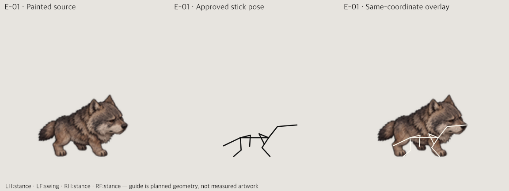
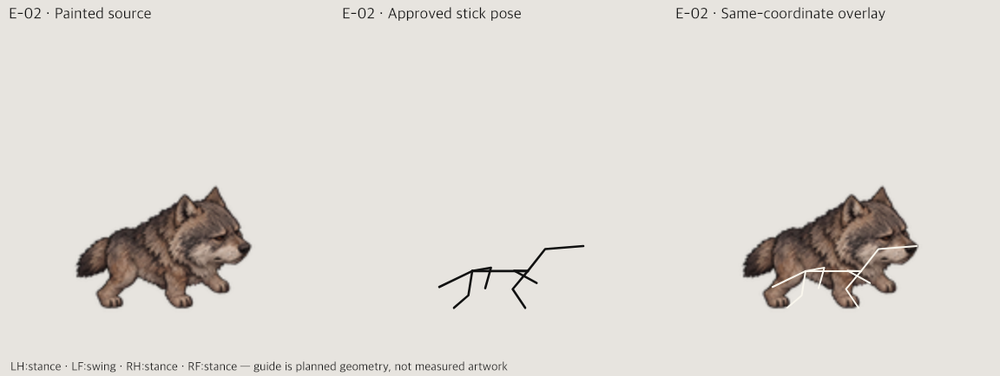
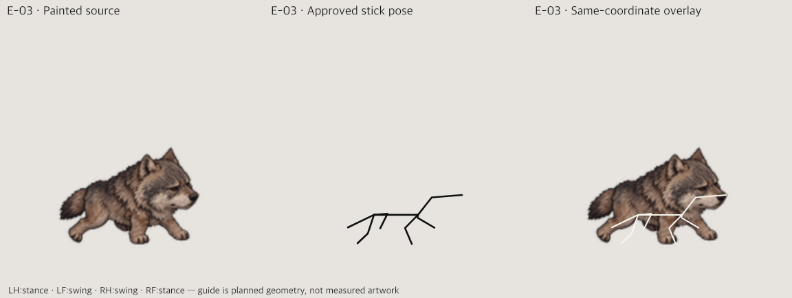
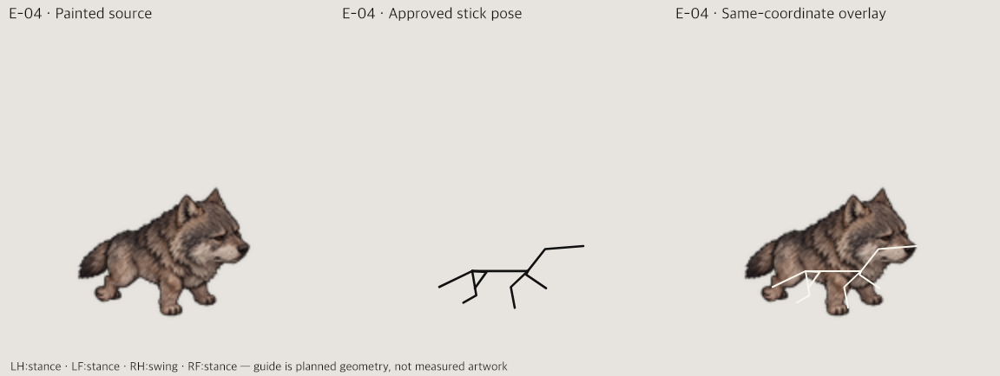
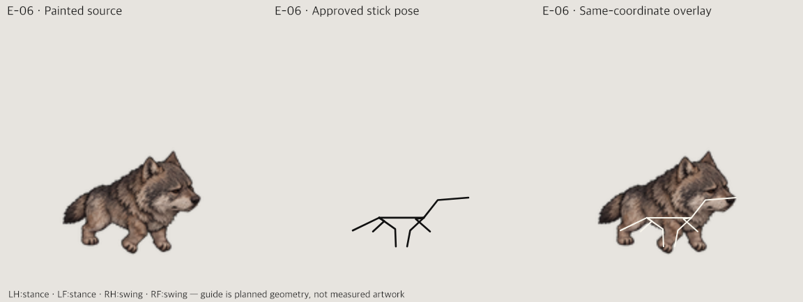
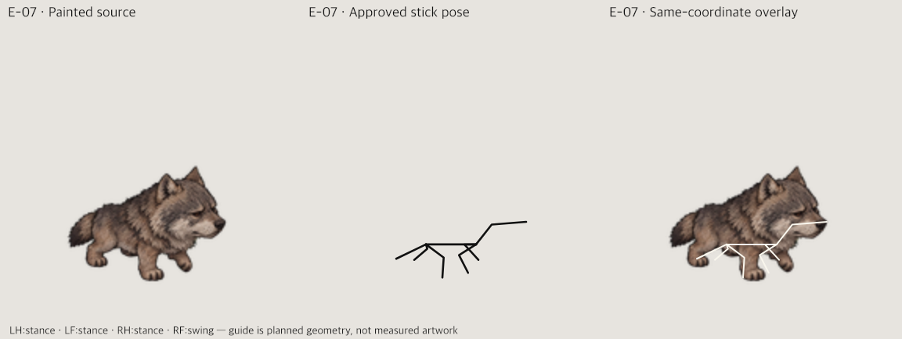
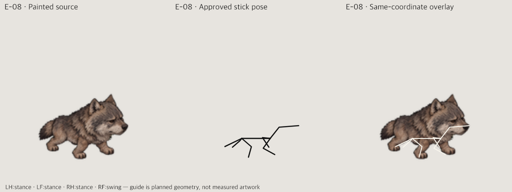
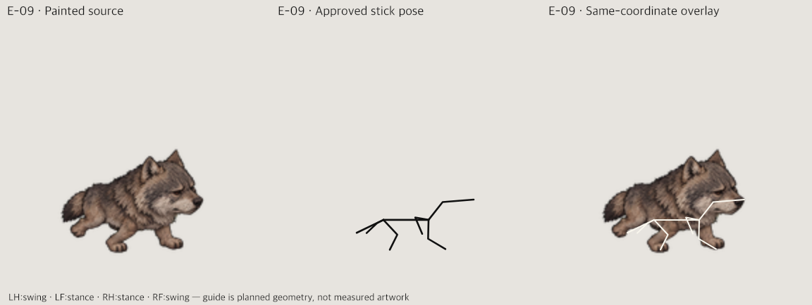
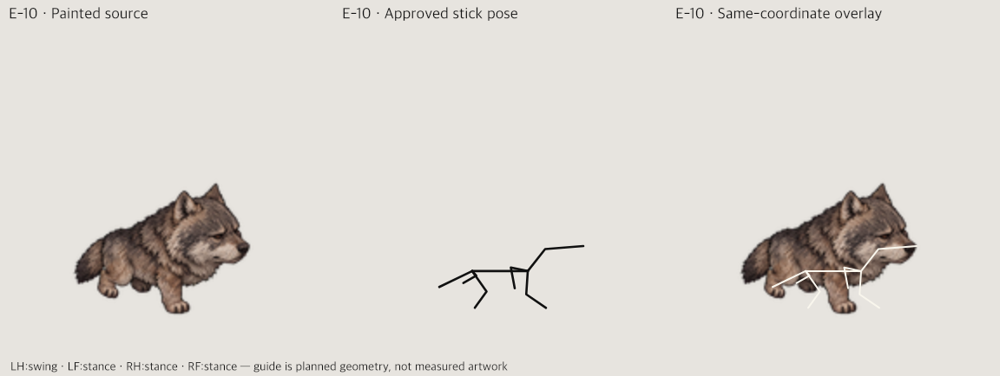
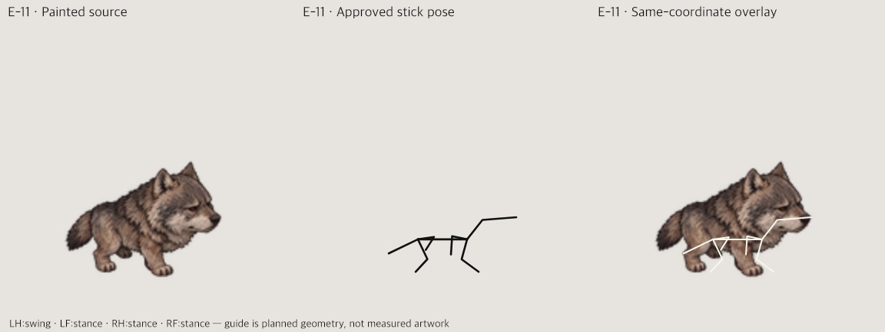
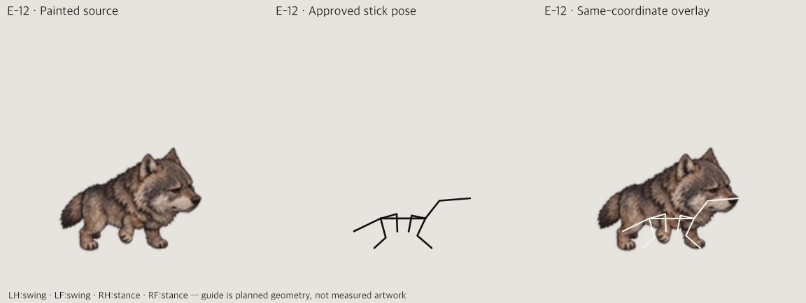
W: all 12 painting / stick comparisons
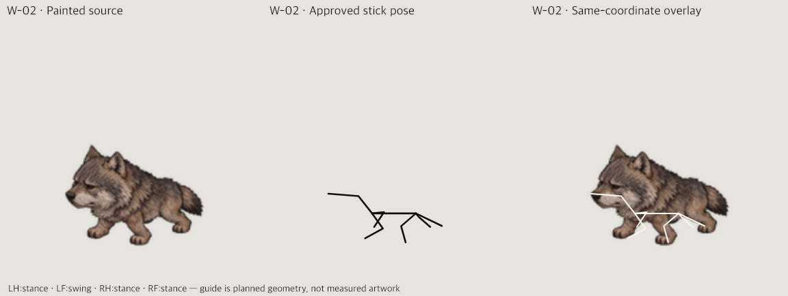
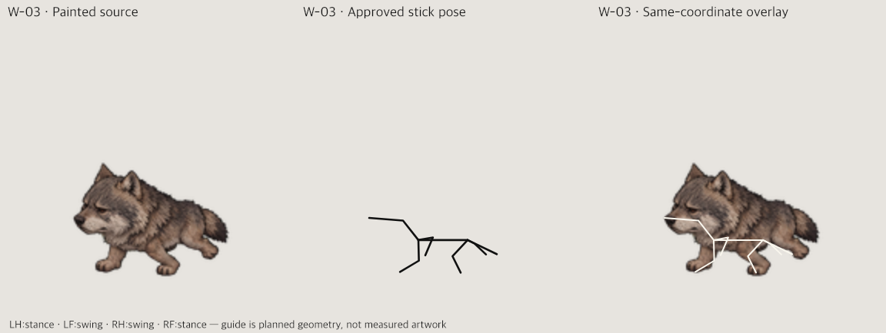
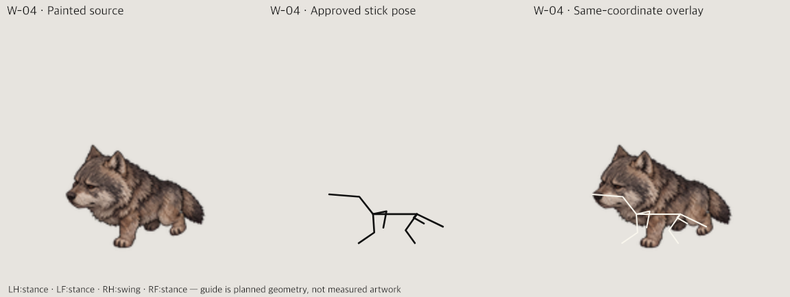
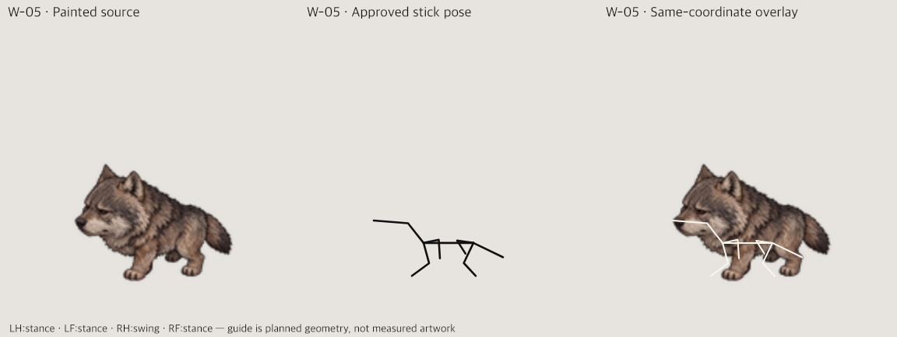
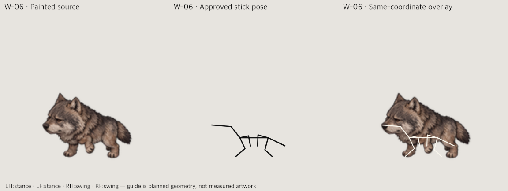
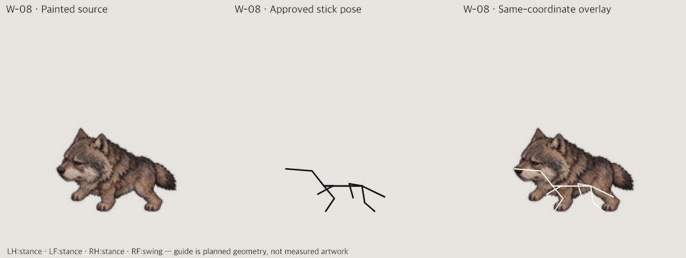
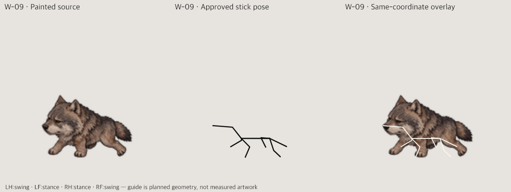
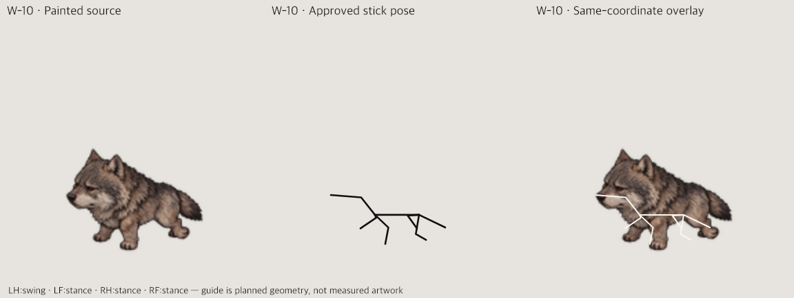
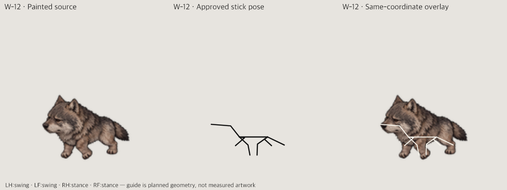
N / S: 24 frames reviewed
Frame-specific findings
# N and S painted-frame audit Status: **candidate rejected for whole-body motion; visual pose corrections required**. This review does not approve any frame as production-ready. Checkpoint: `main`, `1a9943983510ceba587db12a10859b7552b4030f`. Read-only visual assignment, confidence 99% in the scope. Only this review file was written. The supplied pair PNGs and other reviewers' files were preserved. Success criteria: directly view every one of the 24 matching painted/stick/overlay pairs, inspect chronological changes and 12→01, distinguish visible paw evidence from occlusion, and assess head/torso/tail/fur participation in the gait. Every assigned pair was opened with `view_image`, in order N-01…N-12 then S-01…S-12; N-12/N-01 and S-12/S-01 were reopened together for the loop seams. The original `base-wolf-v02.png` and `walk-v07/canonical-crop.png` were also viewed. The sprite-production skill and its `whole-body-poses.md` reference were read. Authority: `walk-v07/manifest.json` supplies the approved planned poses, 192×192 logical canvas, root (96,156), 12 frames at 12 frames per second and 36-unit stride. Those coordinates are **targets**, not measurements of painted pixels. The comparison images use the same coordinate space without independent per-frame fitting. LH/LF/RH/RF mean anatomical left hind, left front, right hind and right front. In N, anatomical left is screen left; in S, anatomical left is screen right. P = stance; S = swing. This is manual visual evidence with no claimed exact landmark measurements or contact-test pass. ## Per-frame findings All 24 frames retain a connected furry animal silhouette. All N frames face away without showing a face; all S frames keep a centered front-facing muzzle and both eyes. These direction checks pass visually. Grey-brown matte coat, small weary eyes in S, and short legs broadly preserve the identity. The following rows record pose and motion defects rather than treating those common successes as a motion pass. | Frame | Approved support | Painted pose / visibility | Whole-body and adjacent-frame finding | Verdict / repair | |---|---|---|---|---| | N-01 | LH P, LF S, RH P, RF P | Right hind is visibly extended and left hind shorter, broadly matching the rear-foot endpoint order. Foreleg endpoints are obscured by the broad neck/body; a small screen-left protrusion cannot establish the LF underside landmark. | Broad head, neck folds, rump and central tail are effectively held through N-03. From N-12 the head widens and the back/tail design changes instead of smoothly responding to the support change. | Motion fail; redraw as a whole-body cycle key and annotate occluded forepaw visibility honestly. | | N-02 | LH P, LF S, RH P, RF P | Both visible hind paws remain nearly where N-01 put them although both planned stance endpoints advance. The large planned LF upward swing change is not visually readable; LF/RF remain occluded. | Head, back markings, rump and tail are held from N-01 despite the changing swing leg. | Motion fail; give the loaded torso and neck a coordinated response and preserve the planned hind progression. | | N-03 | LH P, LF S, RH S, RF P | Left hind extends slightly, but right hind remains drawn as a long downward leg despite entering low swing. The small intended lift cannot be confirmed from its underside. Front-paw geometry is occluded. | Upper silhouette and coat remain held. The next frame replaces the broad upper contour with a narrower, longer-looking animal. | Motion fail; resolve low RH lift and transition to N-04 without changing body identity. | | N-04 | LH P, LF P, RH S, RF P | A bent/lifted right hind is visible and left hind is extended. Their broad ordering follows the guide. LF/RF endpoints remain hidden; no planted contact can be certified. | Compared with N-03 the head narrows, back lengthens and tail becomes longer and narrower. This is a design jump at the three-frame boundary. N-04…06 then hold that upper body. | Motion fail; repair N-03→04 as adjacent intact drawings with stable proportions. | | N-05 | LH P, LF P, RH S, RF P | Right hind is higher and flexed relative to N-04, a readable swing. Left hind underside barely progresses even though its stance target advances. Front feet remain obscured. | Head, layered spine markings and tail remain held while the right hind moves. | Motion fail; retain the useful hind swing while moving/deforming the attached hip, flank and neck coherently. | | N-06 | LH P, LF P, RH S, RF S | Right hind remains lifted, consistent with the late RH swing in broad terms; the low-lift phase is not clear from the paw shape. Left hind stays near N-05. RF begins swing but its endpoint is hidden. | Upper mass and tail are again held. N-06→07 changes upper coat contours and rump/tail silhouette abruptly. | Motion fail; preserve low RH swing/contact intent and smooth the whole-body boundary into N-07. | | N-07 | LH P, LF P, RH P, RF S | Left hind is long and right hind short, broadly appropriate for the alternate support phase. Right hind appears higher than its guide endpoint. RF swing and LF stance are not separable under the torso. | A new narrower head/back drawing replaces N-06; then the upper animal is held through N-09. | Motion fail; establish this support key from the same identity and registration, with readable support-driven flank response. | | N-08 | LH P, LF P, RH P, RF S | Visible hind paws are almost held from N-07, though both stance targets progress. RF's planned upward swing is occluded; cannot confirm it from the unchanged outer silhouette. | Head, shoulders, back bands and tail remain held. | Motion fail; continue actual hind stance progression and a coherent whole-body response. | | N-09 | LH S, LF P, RH P, RF S | **Clear phase mismatch:** screen-left hind paw retracts high while screen-right hind extends far downward. The guide instead keeps LH near its low swing endpoint and RH at the shorter stance endpoint. LF/RF remain hidden. | Tail and upper body stay held while the hind silhouette changes sharply. N-08→09 produces a premature-looking support swap, then N-09→10 changes the body design. | Pose and motion fail; repaint the LH/RH configuration from the exact guide, with connected hips, and check N-08→09→10. | | N-10 | LH S, LF P, RH P, RF P | Left hind is flexed, right hind supports, broadly matching the intended ordering. Both visible hind endpoints look higher/shorter than the guide in this pose. Front endpoints are obscured. | Head shape, ear contour, back bands and rump width change from N-09; this new upper body is then held through N-12. | Motion fail; repair the batch boundary and recheck actual hind endpoints. | | N-11 | LH S, LF P, RH P, RF P | Left hind is raised and right hind extends downward, a readable alternate swing/support pose. Planned RF/LF stance contacts remain hidden. | Head, torso and tail are held from N-10. Only visible lower legs change. | Motion fail; integrate the swing into the hip/flank and coordinate the neck/head response. | | N-12 | LH S, LF S, RH P, RF P | Left hind remains near N-11 instead of completing a clearly readable low-lift landing approach. Right hind remains extended. LF begins swing but cannot be located independently. | Upper animal stays held. N-12→01 changes head width, neck/back bands, rump and tail length; the seam closes foot ordering more plausibly than body appearance. | Motion fail; repair the low-lift transition and repaint the seam as adjacent intact frames. | | S-01 | LH P, LF S, RH P, RF P | Screen-left RF is long and screen-right LF shorter, broadly following the guide. LF's raised/retracted appearance is readable. Both hind endpoints are covered by head/body. | Huge frontal head and back/tail contours are held through S-03. At S-12→01 a lateral paw disappears, coat/back contours change and the front-paw displacement is uneven. | Motion fail; retain the useful front support key, add whole-body response and resolve the seam. | | S-02 | LH P, LF S, RH P, RF P | LF advances as required, but **planted RF retracts much higher/shorter than its approved endpoint**. Its appearance reads as a lift although its target remains stance. Hind paws are occluded. | Face, ears, back bands and tail are held from S-01 while the visible legs switch lengths. | Pose and motion fail; preserve RF stance trajectory and integrate the LF swing into shoulder/chest deformation. | | S-03 | LH P, LF S, RH S, RF P | LF reaches the long low-swing endpoint reasonably in projection. RF remains drawn high/short compared with its planted guide endpoint. RH low swing is hidden, so no rear lift can be certified. | Face/back/tail stay held, then S-04 changes muzzle and body proportions/coat contours. | Pose and motion fail; repair RF support and S-03→04 while preserving LF's guide-driven reach. | | S-04 | LH P, LF P, RH S, RF P | LF is long in stance and RF short. Broad endpoint ordering fits, but LF extends below the guide endpoint. Hidden hind motion cannot be assessed. | Head becomes narrower with a longer-looking muzzle than S-03; the tail/back shape changes at the boundary. Upper animal then holds through S-06. | Motion fail; keep consistent head/body proportions and correct LF underside registration. | | S-05 | LH P, LF P, RH S, RF P | LF underside barely changes from S-04 although its stance target retracts. RF remains short. Both hind paws are hidden, including the intended RH swing. | Face, ears, back and tail remain held. | Motion fail; preserve LF stance travel and coordinate shoulders/back with the hidden hind swing rather than merely holding the torso. | | S-06 | LH P, LF P, RH S, RF S | LF remains long/low instead of continuing its stance retraction. RF extends downward as it enters low swing; its painted endpoint is also below the guide. RH remains occluded. | Upper silhouette stays held. S-06→07 broadens the torso and changes ears, face/back fur and tail shape. | Pose and motion fail; correct both visible front endpoints and smooth the adjacent whole-body transition. | | S-07 | LH P, LF P, RH P, RF S | Screen-right LF long/stance and screen-left RF short/swing form a readable support contrast, broadly matching the guide. Hind paws remain occluded. | Torso/head become wider than S-06. Within S-07…09 the face, back, tail and fur contours are held. | Motion fail despite useful front-leg contrast; retain it in a coordinated whole-body pose. | | S-08 | LH P, LF P, RH P, RF S | Two front endpoints become nearly level, broadly matching the guide's near-level pair. A still image cannot certify RF clearance merely from endpoint proximity. Both hind endpoints are hidden. | Upper animal remains held from S-07; no shoulder/head response accompanies the passing front leg. | Motion fail; articulate the swinging limb and attached chest/neck while keeping the stance underside trajectory. | | S-09 | LH S, LF P, RH P, RF S | RF is long and near its low swing target. **Planted LF is drawn too high/short** relative to its guide, causing an early-looking support switch. LH swing is occluded. | Face/back/tail remain held. S-09→10 changes torso/face/back contours and introduces a separate visible lateral rear paw. | Pose and motion fail; correct LF stance and recheck S-08→09→10 with stable body form. | | S-10 | LH S, LF P, RH P, RF P | Front endpoint ordering broadly follows the guide: RF long, LF short. A small paw is visible lateral to the screen-left jaw/body, plausibly RH, but well outside the guide's RH lane; identity is not certain without a painted landmark annotation. LH is hidden. | Body/back bands and tail change from S-09, then hold through S-12. No weight response accompanies rear swing. | Motion fail; establish anatomical identity/attachment of the lateral paw, then correct it against the guide. | | S-11 | LH S, LF P, RH P, RF P | Front paws are almost held from S-10 although both stance targets retract. The lateral screen-left paw is also held and cannot prove RH contact; LH swing remains hidden. | Face, shoulders, back markings and tail are held. | Motion fail; advance actual stance contours and provide coherent rear-hip/back participation. | | S-12 | LH S, LF S, RH P, RF P | **LF extends downward from S-11 as swing begins, instead of retracting/upward toward its approved endpoint.** RF is held long despite stance retraction. The ambiguous lateral paw persists; LH is hidden. | Upper animal stays held. At 12→01 the lateral paw disappears, LF changes in the wrong apparent direction for its target progression, and upper coat/body contours change. | Pose and motion fail; repaint S-11→12→01 with correct LF low-lift timing, RF stance progression and stable anatomical occlusion. | ## Cycle findings **N:** The clearest hind action is the alternating flexed/extended pair in N-04…06 and N-10…12. It is undermined by N-09's wrong hind configuration, weak stance progression in adjacent frames, and mostly unreadable front motion. Rear-view occlusion is legitimate, but this drawing cannot prove the hidden front contacts or swings. The back, head and tail appear held inside 01…03, 04…06, 07…09 and 10…12. At 03→04 the head/rump/tail proportions change visibly; 06→07 and 09→10 change the coat and upper silhouette; 12→01 is a clear broad-head/short-tail reset. These jumps read as four separately drawn animal states, not support-linked whole-body motion. **S:** Foreleg length changes make the intended alternating advance clearer than in N. S-01 and S-07 have useful asymmetric support contrast; S-08's near-level pair broadly follows the control. That does not excuse RF stance retraction in 02/03, held LF stance in 04…06, prematurely shortened LF in 09, or LF moving downward as its swing begins in 12. Hind limbs are mostly hidden by the head. The lateral paw in 10…12 needs anatomical annotation before it can be claimed as RH. Front head/back/tail contours hold inside the same four trios, while 03→04, 06→07 and 09→10 change muzzle/torso/fur design. At 12→01 the upper design reset is smaller than N's but still visible; the paw appearance/occlusion and endpoint displacement do not close cleanly. **Whole-body requirement:** The animal is connected in every still, but connected alpha and recognizable anatomy do not establish coordinated gait. Across both cycles, there is no convincing phase-linked head/neck response, shoulder/rump compression, torso balance or tail response within each trio. Major fur bands remain still while legs change, then jump at the authoring boundaries. This is a visual outcome, not proof that source images were assembled from parts. The recorded N/S authoring instruction, “Keep the head/spine/camera/scale and coat features identical across all three; only the specified limbs change,” explicitly encourages the held-upper-body failure and needs correction before another attempt. ## Repair priorities and limits 1. Replace that limb-only authoring instruction. Plan a small set of intact support-driven whole-body keys first: coordinated neck/head, chest/shoulder, flank/hip and tail response, stable coat markings moving with their skin/fur, and the same approved identity, camera, root, proportions and paw targets. Paint each animal intact. No painted-part assembly, runtime bob or held head/torso can satisfy this requirement. 2. Repair the clearest target errors first: N-08→09→10 hind ordering; S-01→02→03 RF stance; S-04→05→06 LF stance progression; S-08→09→10 LF support; and S-11→12→01 LF low swing/RF stance. Use the exact paired controls, not a nearby pose. Recheck every changed neighbor and seam. 3. Repair all four trio boundaries for identity, coat and body continuity. Preserve the original base appearance rather than accepting a failed group as identity authority. Do not independently recenter or resize frames to hide jumps. 4. Annotate actual visible underside landmarks and attachment points on the resulting drawings. Mark occluded N forepaws and S hind paws as occluded; do not substitute target coordinates for measurements. Resolve the lateral S-10…12 paw's identity and lane. Only then can a numerical world-contact check be made. 5. After whole-body and pose repairs, inspect the exported atlas at normal and slow speed, actual display scale, and stationary-ground/moving-root playback, including start/stop and 12→01. This review covers static chronological visual comparisons only; it does not verify runtime timing, contact drift, input transitions, alpha connectivity quantitatively or engine integration. No exact painted-paw coordinates were measured. Depth/overlap and short furry limbs make some joints and underside landmarks uncertain. A plausible endpoint order is not a passed planted-contact check. All 24 frames remain candidates pending repair, independent measurement and motion playback.
N: all 12 painting / stick comparisons
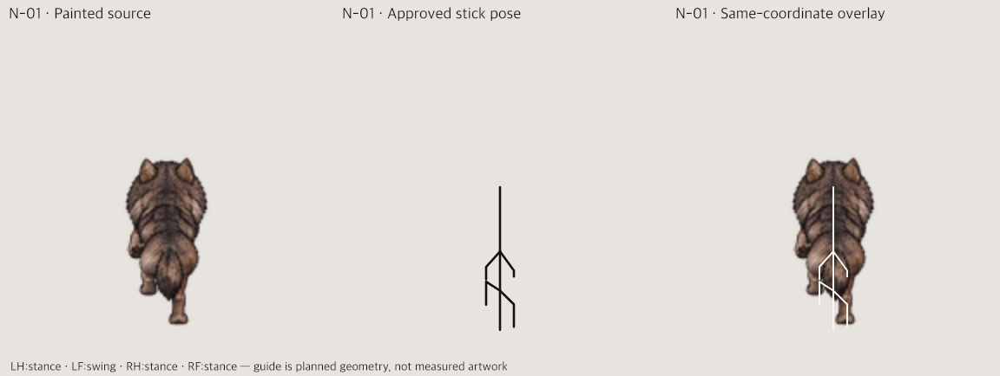
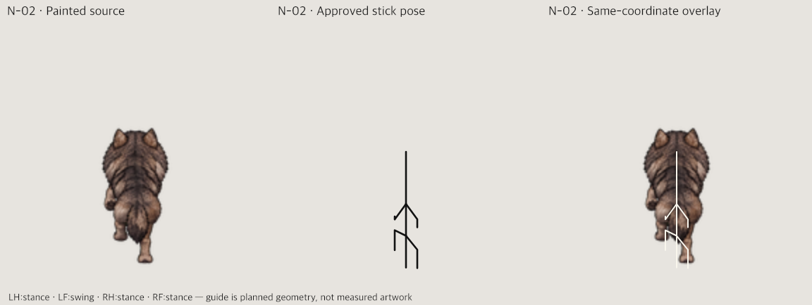
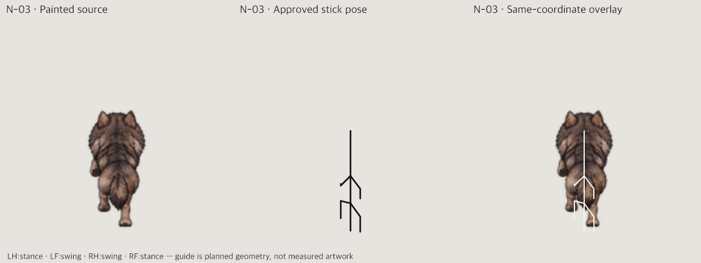
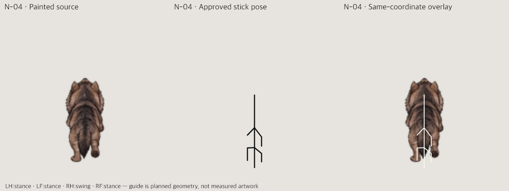
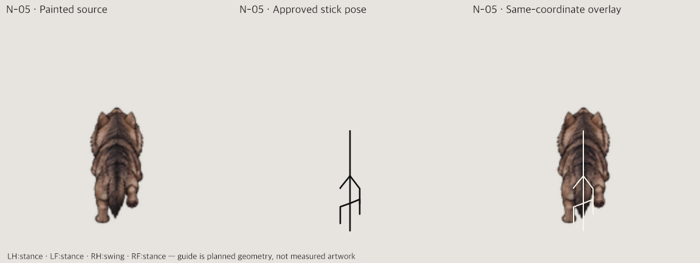
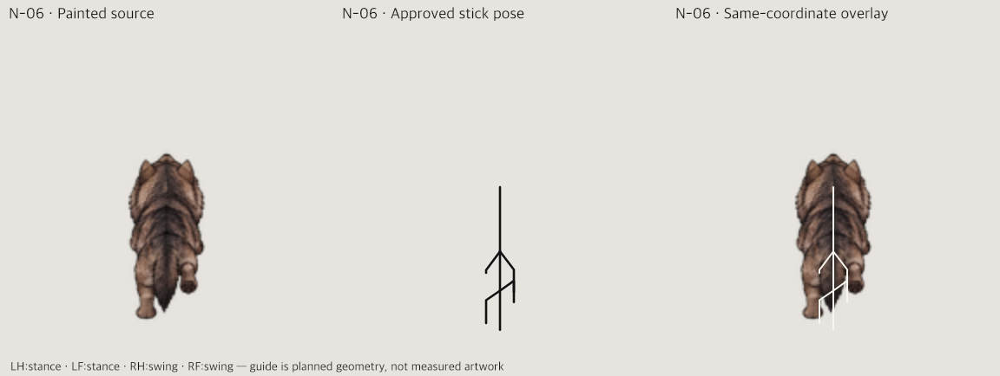
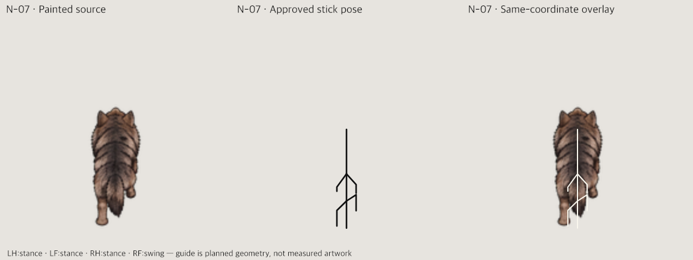
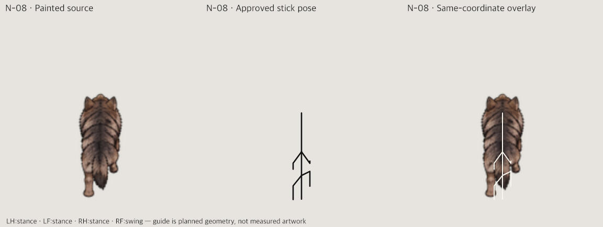
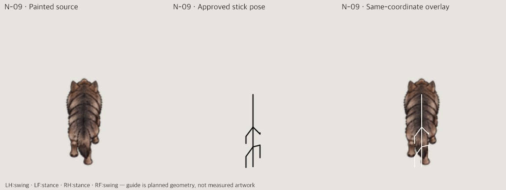
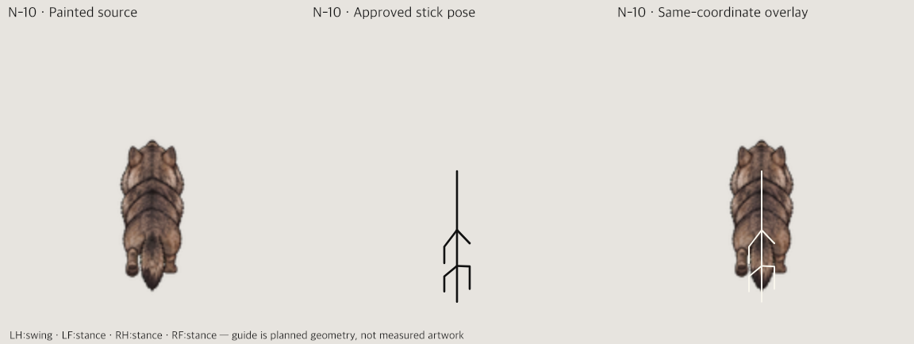
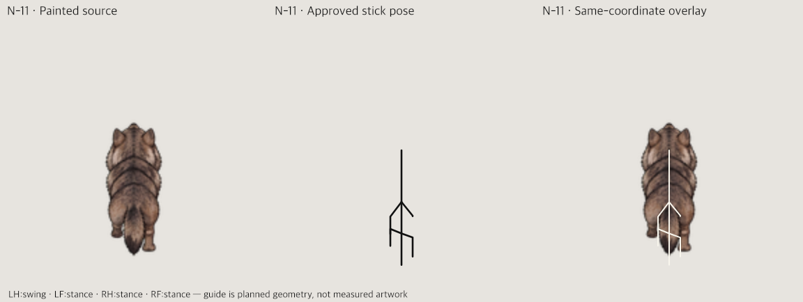
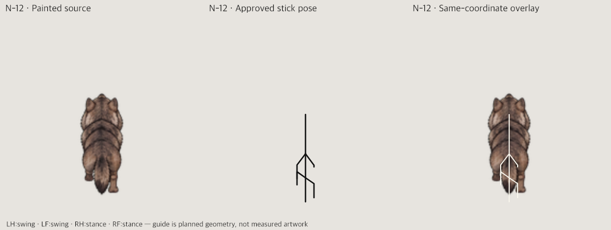
S: all 12 painting / stick comparisons
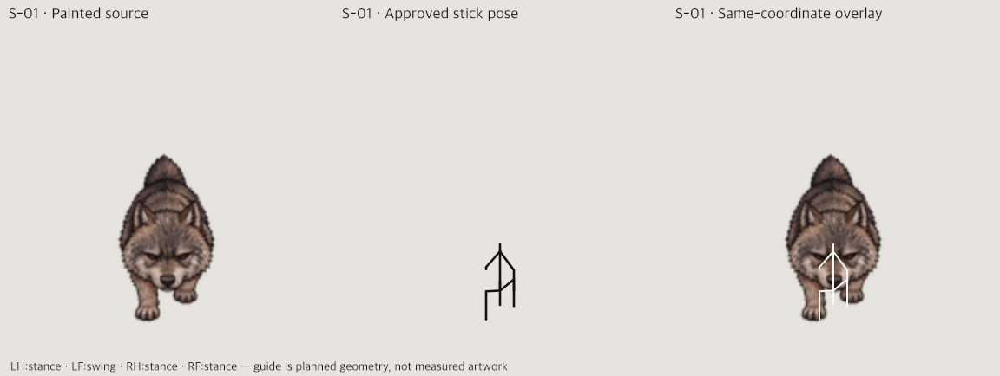
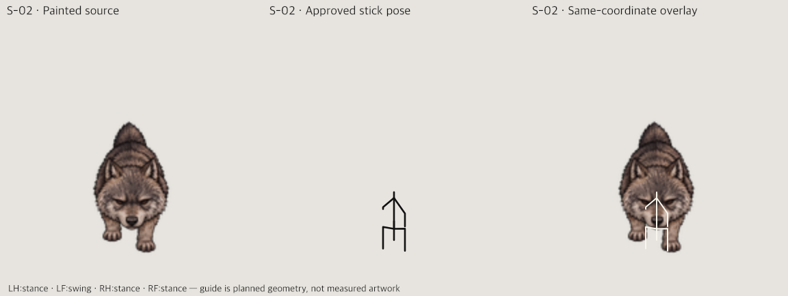
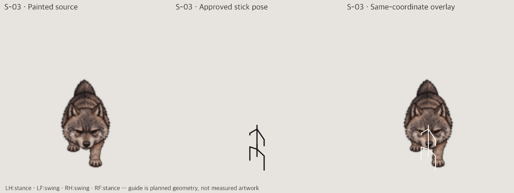
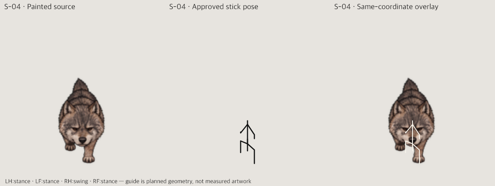
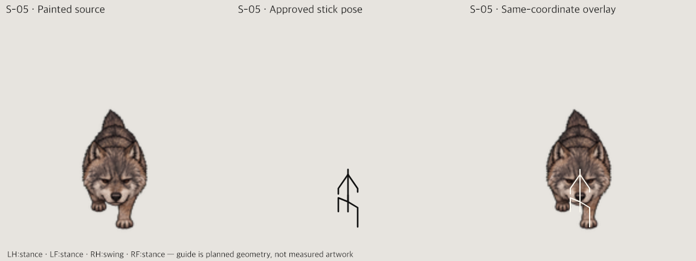
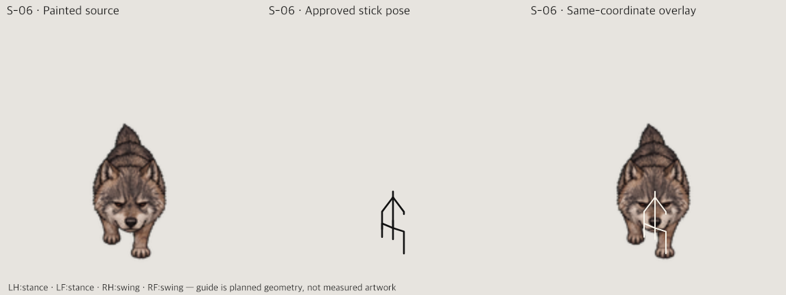
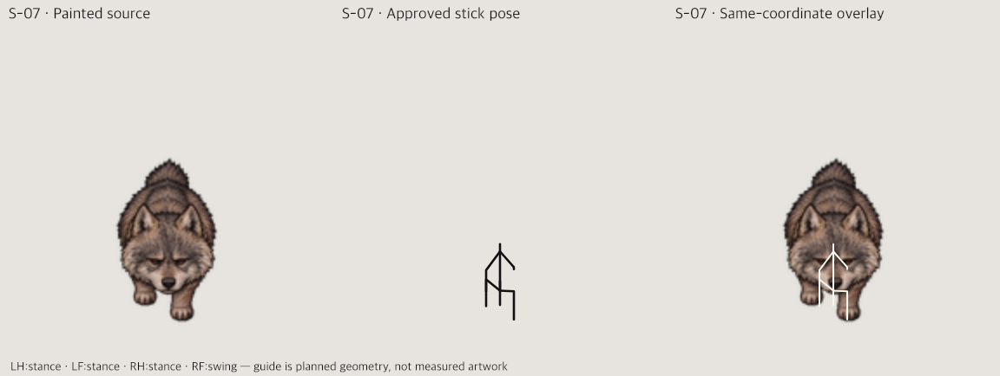
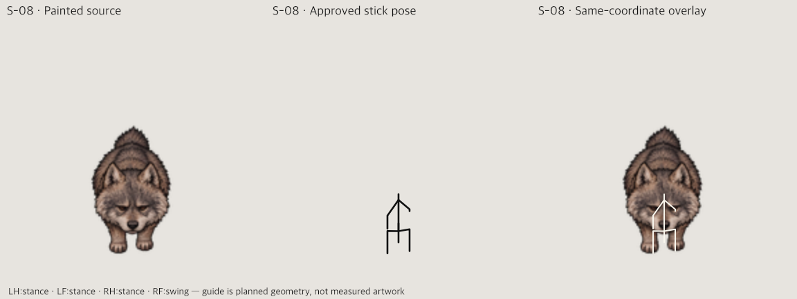
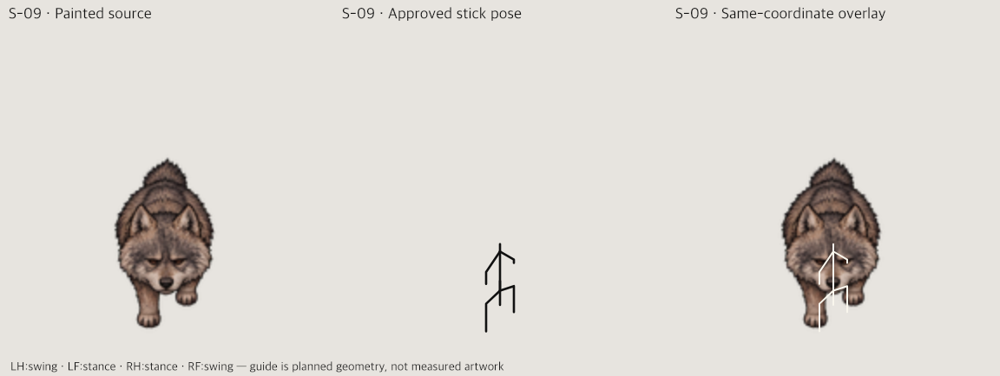
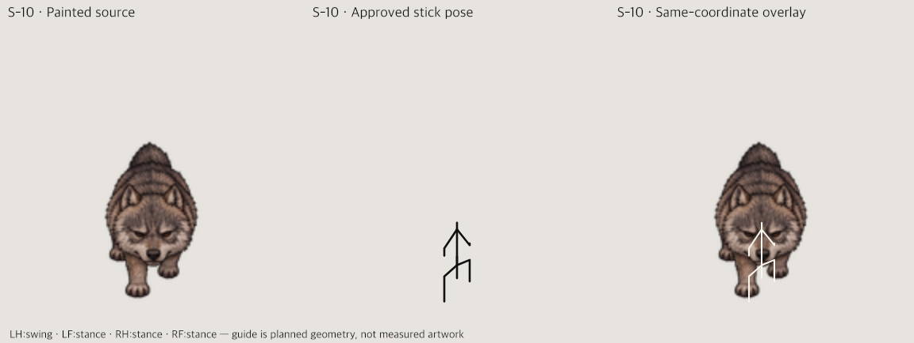
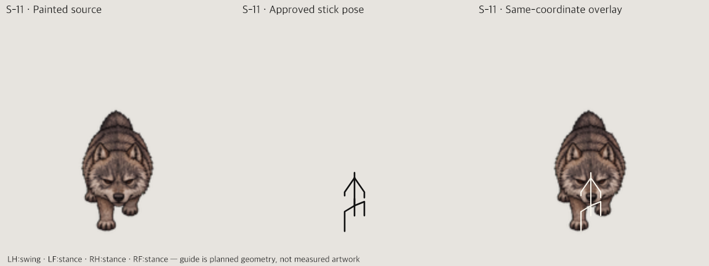
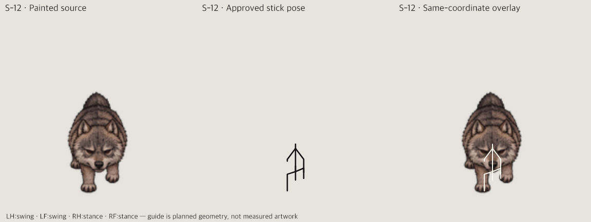
NE / NW: 24 frames reviewed
Frame-specific findings
# NE and NW painted-frame review Status: **candidate fails visual acceptance; no frames promoted to approved**. Checkpoint: `main` at `1a9943983510ceba587db12a10859b7552b4030f`. Confidence in the audit scope and interpretation: 99%. This review owns NE and NW only. It changes no paintings, guides, atlas, runtime or authoring requests. Success criteria: inspect each complete painted wolf against its exact approved stick pose; assess visible support/lift, anatomical overlap, direction/camera and identity; check chronological adjacent transitions and 12→01; require readable coordinated head, torso, tail and fur motion with the leg action. Geometry in the guide is a target, not a measurement of the painting. ## Evidence and limits Manually opened every `audit/pairs/NE-01.png` through `NE-12.png` and every `audit/pairs/NW-01.png` through `NW-12.png` with `view_image`, in chronological order. Reopened NE-01 immediately after NE-12, and NW-01 immediately after NW-12, to inspect both seams. Each pair contains the painting, matching approved stick and same-coordinate overlay at the shared 192-square logical canvas. No frame was certified by a sheet, mirror relationship, hash or another direction's review. Also inspected `base-wolf-v02.png` and `walk-v07/canonical-crop.png` for identity; read `walk-v07/manifest.json` for the target support sequence and logical registration; read the sprite-production whole-body pose reference and V10 README. The numerical plan is twelve 83.333 ms poses in a one-second cycle, root (96,156), stride 36. Those numbers describe the plan, not independently measured art. This is visual pair and transition inspection, not runtime playback or numerical contact certification. No exact painted coordinates or tolerances are claimed. Far paws and joint origins can be hidden by the thick coat. Where a sole or anatomical side is unclear, the row reports it as unverified; the guide is not used to invent a painted landmark. The painting generally reads as one connected animal, but connectivity cannot prove either the authoring method or convincing whole-body motion. Abbreviations: LH = left hind; LF = left fore; RH = right hind; RF = right fore. S = target stance, W = target swing. These states are copied from the approved pose, not inferred from artwork. Foot names in visible-art observations follow the expected depth order; uncertain hidden assignments are stated. ## Frame findings All rows fail the whole-body motion requirement: the head, ears, neck/ruff, back markings and tail are visually held within each three-frame group, despite changing leg support. At group boundaries, their changes read as drawing/camera/texture replacement rather than coordinated weight transfer. Each row below was nevertheless inspected separately for its own paw pose. | Frame | Approved support (LH / LF / RH / RF) | Painted pose versus exact guide | Body, occlusion and adjacent continuity | | --- | --- | --- | --- | | NE-01 | S / W / S / S | Both hind contacts cluster to the left and above their target endpoints. The visible fore sole is above its stance endpoint. The LF swing is largely hidden, so its sole cannot be independently confirmed. | Rear upper-right direction is readable. Skull is small relative to the long back/rump compared with the original. Head/ruff/back/tail show no readable response to the raised foreleg. | | NE-02 | S / W / S / S | The exposed foreleg changes under the ruff, but the high LF swing target remains obscured. Visible hind soles still sit left/up of their guides; the near fore stance sole also sits above its endpoint. | Upper silhouette and coat bands remain visually held from 01 while the limbs move. Hidden fore overlap does not provide evidence that the intended swing was achieved. | | NE-03 | S / W / W / S | The near hind paw is drawn farther left/up while the RH target has only a small lift at this phase. RF stance remains high relative to its guide. The LF landing preparation is obscured. | Upper body remains held from 02. The apparent hind extension is greater than the subtle target change, and the shoulder/neck do not visibly take the next support transfer. | | NE-04 | S / S / W / S | Hind soles and visible RF stance sole remain above the target endpoints. The RH swing is tucked under the rump, with no clearly separable sole at its target; far LF stance is obscured. | 03→04 changes ear shape, head/ruff outline, back markings and rump/tail silhouette. That simultaneous replacement is not explained by this small adjacent phase change. | | NE-05 | S / S / W / S | A dark hind paw becomes visible beneath the abdomen, but it is substantially above the RH swing endpoint. LH stance extends left of its endpoint; RF stance sole stays above its endpoint. Far LF stance remains hidden. | The changing hind fold is readable, but the torso/neck/ruff stay held from 04. The abdomen does not visibly follow the change in support. | | NE-06 | S / S / W / W | Visible fore and hind soles remain high/left relative to the guide. The dark inner paw and partially overlapping limbs do not permit reliable separation of both low-lift swing soles. | The RF lift starts without readable shoulder, neck or coat response. The upper body stays held from 05; internal paw identity is ambiguous rather than numerically verified. | | NE-07 | S / S / S / W | The raised near forepaw is right/up of the RF swing endpoint. The long hind stance extends left of its guide, and the other visible hind sole is high. Far LF stance is hidden. | 06→07 changes head/ear shape, ruff, back texture, rump thickness and tail. The new rounded hip reads as a changed drawing, not a weight shift carried through the adjacent phase. | | NE-08 | S / S / S / W | RF swings farther out to the right and higher than its target endpoint. LH stance remains left of its endpoint; the other visible hind contact remains high. LF stance is obscured. | Head/back/tail and coat bands remain held from 07 while the foreleg reaches. No readable chest/neck/fur follow-through accompanies that reach. | | NE-09 | W / S / S / W | The extended RF stays right/up of the target. LH's small-lift departure is drawn well left of its guide; the other visible hind contact stays high. LF stance is hidden. | Upper body remains held from 08, including the reaching shoulder region. The repaired hind area has no obvious green hole in this pair, but the pose/contact mismatch remains. | | NE-10 | W / S / S / S | RF retracts strongly back/down in the painting although its adjacent target has only a small landing change. Visible hind contacts are high; LF stance is hidden. | 09→10 is a major forepaw snap plus changed head, coat bands, torso length and tail. It does not preserve the reaching foreleg's continuous landing path. | | NE-11 | W / S / S / S | The visible long hind stance is nearly held while the guide continues its stance travel. The intended LH swing is partly tucked beneath the rump and remains high relative to the endpoint; RF stance remains high. LF stance is obscured. | The upper body remains held from 10. The hind swing has no clear pelvic/abdomen response, and the overlapping paw should not be treated as a measured target match. | | NE-12 | W / W / S / S | A dark inner paw appears under the abdomen, but the two swing identities cannot both be separated confidently. The visible long hind and fore stance soles remain above their endpoints. | Upper silhouette stays held from 11. 12→01 then changes skull/ruff/back/rump length and tail; the long visible hind paw drops/extends, producing a reset rather than a continuous cycle. | | NW-01 | S / W / S / S | The exposed swinging forepaw is left/up of LF's endpoint. The central hind stance sole is right/up of LH's endpoint; the outer hind contact is right of RH's endpoint. Far RF stance is obscured. | Rear upper-left direction is readable, but the skull is small against the long torso/rump. No readable head, torso, tail or fur response accompanies the foreleg swing. | | NW-02 | S / W / S / S | LF reaches farther left and higher than its target endpoint. LH stance remains right/up; the outer hind stance extends right of its guide. Far RF stance is hidden. | Upper silhouette and coat markings stay held from 01 while the foreleg reaches. The shoulder/neck region provides no visible continuation of that reach. | | NW-03 | S / W / W / S | LF remains left/up of its low-lift endpoint. The outer hind paw is extended right/up more strongly than RH's small-lift target change supports. LH stance remains high. RF stance is obscured. | Upper body remains held from 02. The exaggerated hind extension is not accompanied by readable pelvic or coat motion. | | NW-04 | S / S / W / S | LF retracts strongly right/down at landing despite only a small adjacent target change. Both visible hind soles are above their endpoints; the folded RH swing under the tail is high. Far RF stance is hidden. | 03→04 changes ears, skull/ruff silhouette, back bands, body length and tail. The forepaw snap and whole-drawing change break the adjacent transition. | | NW-05 | S / S / W / S | The tucked hind swing remains right/up of its guide endpoint. The visible long hind stance and fore stance soles remain high. Far RF stance is obscured. | Upper body is held from 04. The hind fold changes without readable pelvis/abdomen/head response to the support transfer. | | NW-06 | S / S / W / W | The visible fore stance and long hind stance remain high. The dark inner paw is obscured enough that RH and RF's small lifts cannot both be identified or confirmed against the guide. | Upper body stays held from 05. The inner paw appearance does not establish correct canine joint paths or phase-specific shoulder motion. | | NW-07 | S / S / S / W | Visible hind contacts are right/up of their endpoints. LF stance is above its endpoint. The small far forepaw appears left/up of RF's swing target, but its attachment is hidden by the ruff. | 06→07 lengthens/replaces the torso/rump and changes ears/ruff/back/tail. The body does not carry a continuous weight transfer from the preceding pose. | | NW-08 | S / S / S / W | Visible hind soles remain right/up of their stance endpoints. LF stance remains high. The far fore swing is partly visible left/up of its endpoint; its hidden upper joint prevents full path verification. | Head/back/tail and fur bands stay held from 07 while the far foreleg changes. The large limb occlusion has no readable shoulder/neck follow-through. | | NW-09 | W / S / S / W | The long hind paw stays high/right despite LH's small lift. RH stance stays high/right, LF stance stays high, and the far fore paw remains partly obscured left/up of the swing endpoint. | Upper body stays held from 08. Occlusion is plausible, but it cannot establish the two swing contacts; support transfer is not expressed through the torso. | | NW-10 | W / S / S / S | The exposed stance fore sole remains high. The long outer hind sole is high/right relative to the intended hind trajectory; the tucked paw's anatomical assignment is uncertain. Far RF stance is partly hidden. | 09→10 changes ear/head/ruff view, back bands, rump and tail. The expected landing/support transition is accompanied by a replacement of the upper animal rather than coordinated motion. | | NW-11 | W / S / S / S | A dark inner hind paw becomes visible well above the LH swing endpoint. The outer hind stance extends to the right of its guide; LF stance remains high. Far RF stance is partly hidden and appears left/up of its target. | Upper body remains held from 10. The inner swing becomes more visible, but there is no matching pelvic, torso or head response. | | NW-12 | W / W / S / S | The dark inner hind swing stays above its target. The visible fore swing sole is also high, and the outer hind stance remains right of its endpoint. The far fore stance is partly obscured. | Upper silhouette stays held from 11. 12→01 changes ear/skull/ruff, body proportions, coat and tail; the dark inner hind pose gives way to a different visible stance arrangement without a coherent body transition. | ## Cycle verdict and repair priorities 1. **Repair whole-body motion for both full cycles.** All 24 poses need a coherent phase progression of shoulder/hip mass, abdomen, neck/head attitude, tail and fur with the changing supports. The current visually held three-frame upper bodies and group-boundary replacements fail the user's requirement. The authoring instruction to keep head/spine identical while only changing limbs conflicts with that outcome. Redraw intact wolves per pose, retain fixed registration and the approved paw plan, and build the motion into the drawings. Do not solve this with separated painted parts or a runtime bob. 2. **Recover visible paw trajectories from the actual painted pixels.** Every row has visible endpoint disagreement or an unverified hidden contact. Prioritize the reaching forepaw landing transitions NE09→10 and NW03→04, where the intended paw barely changes while the painted paw retracts abruptly. Then repair the consistently high fore/hind soles and the hind contacts displaced toward the outer silhouette. Annotate real visible soles and joints; mark hidden contacts rather than copying guide coordinates into measurements. 3. **Rebuild chronological boundaries and seams.** Explicitly compare NE03→04, 06→07, 09→10, 12→01 and NW03→04, 06→07, 09→10, 12→01. Keep the same camera, head volume, ear construction, rump/tail mass and fur markings while adding phase-driven deformation. Current changes at these boundaries are appearance/shape jumps. Preserve stable identity while allowing the entire animal to move. 4. **Restore the original proportion and medium.** The rear diagonals retain grey-brown, rough fur and canine features, but both read as relatively small skulls on long backs/rump masses compared with the huge broad head and tiny squat body of `base-wolf-v02.png`. The original has dense gritty dry-painted texture; these frames read smoother with broad repeated coat bands at this viewing scale. Re-establish those original proportions and markings in the intact rear three-quarter design before extending repairs to all poses. The upper-left/upper-right directions are recognizable; no obvious howling pose was observed. 5. **Verify repairs in exported playback.** After frame geometry and whole-body continuity are repaired, inspect normal and slow playback, reduced game scale, both loop seams and root travel using the exported package. This review supplies frame-specific visual failures, not a contact-budget pass or final animation approval. Next action: integrate these defects with the other direction reviews, revise the original-reference plus exact-pose authoring control to require coordinated whole-body phase changes, and repair a bounded pilot around a forepaw landing boundary plus its adjacent body phases. Reinspect every affected pair and seam before promoting the repaired cycle.
NE: all 12 painting / stick comparisons
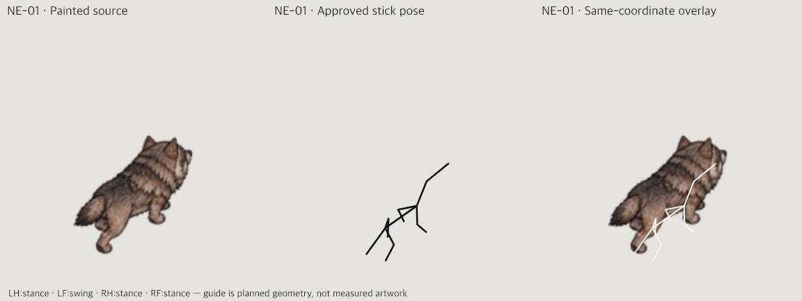
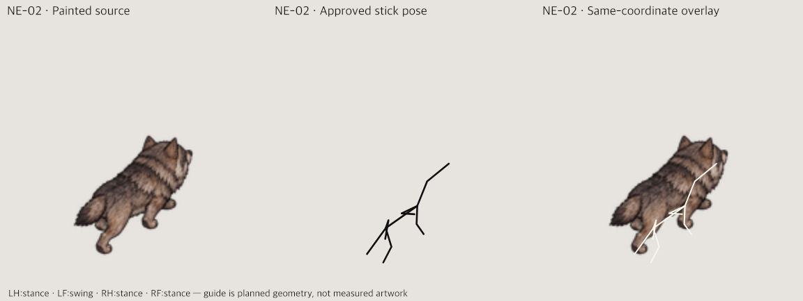
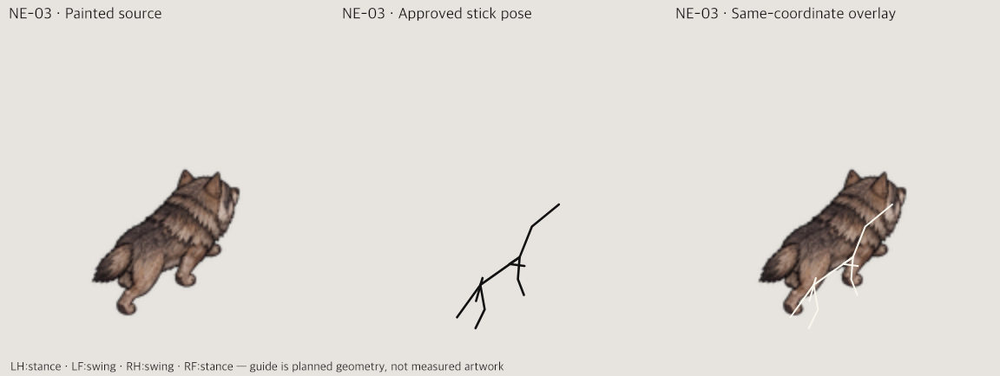
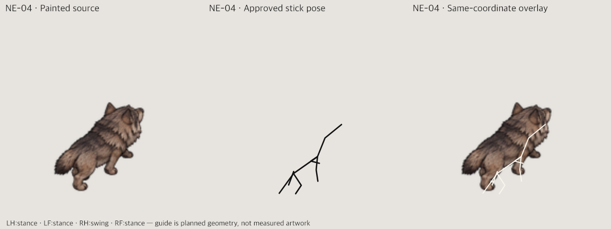
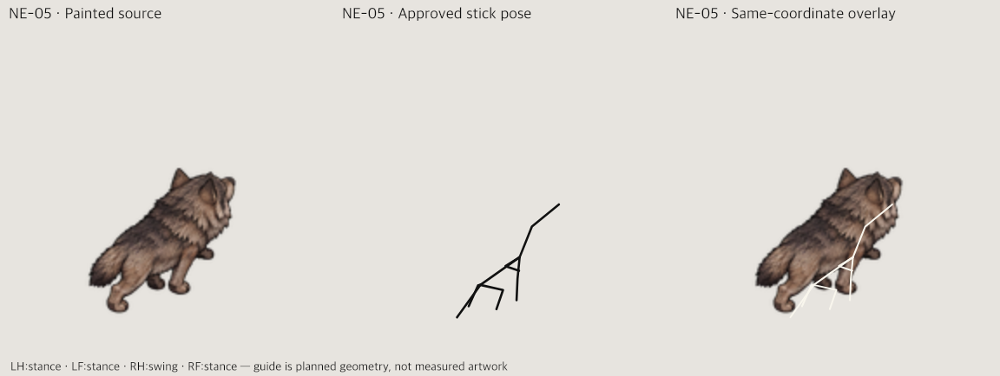
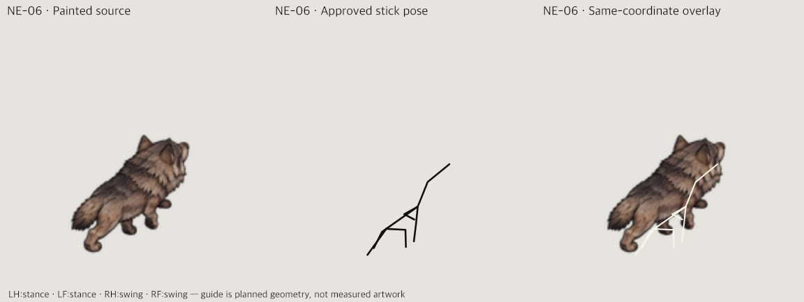
NW: all 12 painting / stick comparisons
SE / SW: 24 frames reviewed
Frame-specific findings
# SE and SW painted-frame review Date: 2026-10-07. Repository checkpoint: `main` at `1a9943983510ceba587db12a10859b7552b4030f`. Assignment interpretation confidence: 99%. This review owns only this report; no paintings, guides, export data, or runtime behavior were changed. ## Scope, authority, and evidence Intended outcome: inspect every active SE and SW painting against its exact approved stick pose, and identify whether the whole wolf moves coherently through the complete cycle. Success requires guide-compatible pose and support, readable limb overlap, stable identity and camera, coordinated head/neck/torso/coat motion, smooth adjacent transitions, and a smooth 12→01 seam. I individually opened and visually inspected these 24 prepared comparison images with `view_image`, in the order listed. Each image includes the painted source, its matching approved stick, and their same-coordinate overlay. I then reopened pose 01 immediately after pose 12 for each direction. SW was independently inspected; no SW verdict was inferred from mirroring or a hash comparison. - SE: `SE-01`, `SE-02`, `SE-03`, `SE-04`, `SE-05`, `SE-06`, `SE-07`, `SE-08`, `SE-09`, `SE-10`, `SE-11`, `SE-12`; then `SE-01` again. - SW: `SW-01`, `SW-02`, `SW-03`, `SW-04`, `SW-05`, `SW-06`, `SW-07`, `SW-08`, `SW-09`, `SW-10`, `SW-11`, `SW-12`; then `SW-01` again. Inputs reviewed: `/Users/ocasta/.codex/skills/sprite-production/SKILL.md` and its `references/whole-body-poses.md`; original `art/sprites/wolf/whole-body/base-wolf-v02.png`; `art/sprites/wolf/whole-body/walk-v07/canonical-crop.png`; the SE/SW target rows in `art/sprites/wolf/whole-body/walk-v07/manifest.json`; and comparison construction in `art/sprites/wolf/whole-body/audit-walk-v10.mjs`. Repository paths in this report are relative to the repository root. Identity comes from the original intact base and canonical crop. Geometry and stance/swing labels come from the approved V07 plan. The plan specifies a 192×192 logical canvas, root `[96,156]`, twelve frames at 12 frames per second, a one-second cycle, and a stride of 36 logical units. These are target values, not measurements of the paintings. In the table, LF/RF mean anatomical left/right foreleg; LH/RH mean anatomical left/right hind leg. “Swing” lists the plan's moving feet; all remaining feet are planned stance feet. Where the painted limb cannot be traced through the coat or overlap, I describe the visible screen position and leave its anatomical assignment unresolved. ## Verdict **Both cycles fail the requested whole-body-motion review and remain candidates.** The intact silhouettes retain a recognizably stocky wolf, large head, pointed ears, short legs, pale muzzle, dark back, and continuous neck/torso. SE and SW remain recognizable down-right and down-left views. I did not see an isolated floating head or an obvious detached painted component. However, the ears, face, ruff, spine contour, tail contour, and coat pattern appear held within each three-frame block while the legs change. At block boundaries, the body/head envelope and registration change abruptly. Those changes read as different held drawings, rather than weight transfer passing continuously through the animal. Coat detail moves with neither the shoulder loading nor the advancing limb inside a block. Continuous pixels alone therefore do not satisfy the whole-body requirement. The approved overlay also misses the painted anatomy throughout both cycles: the neck/head path falls below the painted muzzle, and the shoulder/spine path runs low through the lower chest/underside rather than following the corresponding painted anatomy. Several visible paw endpoints lie above or laterally away from their target endpoints. This is an observed registration/pose mismatch, not a numerical contact measurement. ## Individual frame findings | Frame | Planned swing | Painted pose and transition finding | | --- | --- | --- | | SE-01 | LF | A tucked forepaw beneath the muzzle and a longer near foreleg make the opening pose readable. The visible rear and near-front paws suggest support, but the hidden hind limb cannot be assigned confidently. The guide's head/neck line lies below the painted muzzle. Head, ruff, back, and tail visually hold into 02 and 03. The preceding 12→01 seam changes head/body proportions and shifts the near front paw abruptly. | | SE-02 | LF | The rightmost visible forepaw advances away from the chest, consistent with the direction of the planned LF swing. Its endpoint remains above/inward of the corresponding target. The near foreleg retracts somewhat from 01, while the rear paw tucks back. No accompanying neck, shoulder, spine, or tail response is visible; the upper body remains the 01 hold. | | SE-03 | LF, RH | The advancing foreleg reaches its most extended pose in this block, making the foreleg progression readable. The guide endpoint still extends below the painted paw. The near front paw changes little from 02 despite planned stance retraction. The intended RH toe-off cannot be confirmed through the rear overlap. Upper-body and coat detail remain held. | | SE-04 | RH | The forward forepaw snaps back from 03, although the LF touchdown target changes very little between those poses. Head/muzzle position, torso length, and tail placement also change at this boundary. The rear swing begins as a tucked leg, but its side is difficult to trace through the coat. The lower placement of the guide's neck/chest path persists. | | SE-05 | RH | A rear paw moves inward beneath the rump, giving some indication of hind swing. The other hind limb is partly concealed and its stance cannot be certified. The two visible forepaw locations change little while their targets retract. Head, ruff, spine, tail, and coat pattern remain held from 04, with no visible pelvic or shoulder loading response. | | SE-06 | RH, RF | The near forepaw begins to tuck and the rear paw remains close beneath the rump, but the combined hind-swing completion and fore toe-off are weakly distinguished. Hidden leg overlap prevents a firm anatomical-side assignment. The upper body remains the 04–06 hold instead of responding to the support change. Visible forepaw positions still do not coincide with the guide endpoints. | | SE-07 | RF | A tucked near forepaw starts the next forward swing, while the other visible front leg remains extended. The change from 06 raises/repositions the head and alters the body envelope at once; it is a block jump rather than continuous shoulder/neck motion. A small under-body hind paw is partly hidden. The head/neck overlay remains below the painted face. | | SE-08 | RF | The near foreleg advances down-right, a readable continuation of the planned RF swing. The other front paw retracts slightly. The swinging paw is still above the target endpoint, and the rear stance evidence is incomplete because of overlap. Head, coat markings, spine, and tail visually hold from 07; they do not follow the leg progression. | | SE-09 | LH, RF | The near foreleg reaches forward while the other front paw becomes crowded beneath the chest/neck. This makes the LF stance paw difficult to trace independently. Intended LH toe-off is not clear in the visible rear silhouette. The guide's lower foreleg endpoint extends below the painted paw. The upper body remains held from 07 and 08. | | SE-10 | LH | The extended near front paw retracts, and the rear paw remains visible, but LF stance and LH swing are largely concealed under the body. Only the visible paw evidence can be judged. Compared with 09, the muzzle extends farther and the torso/tail envelope changes abruptly. The guide's stance endpoint remains below the visible front paw; no coordinated loading motion bridges the boundary. | | SE-11 | LH | The visible front stance paw retracts slightly. Under-chest and under-rump overlap still prevents confident LF/LH identification or lift assessment. The muzzle, ruff, back, tail, and fur pattern are held from 10. The guide path remains too low relative to the painted head and chest, so apparent support does not establish pose fidelity. | | SE-12 | LH, LF | A tucked paw reappears beneath the muzzle, providing some fore-swing indication, while the other visible foreleg remains long. Its lateral placement does not match the corresponding tucked target. LH swing remains concealed/ambiguous. The upper body stays held from 10–11. On the explicit 12→01 comparison, the head narrows/repositions and the near front paw jumps back more sharply than the neighboring retractions. | | SW-01 | LF | The wolf clearly faces down-left. One front paw is tucked beneath the chest while the other is extended; a large rear paw and a small partly hidden under-body paw are visible. The rear placement and tucked forepaw do not coincide with their targets, and the guide's muzzle path is below the face. The upper body holds into 02–03. At 12→01 the head rises/repositions abruptly. | | SW-02 | LF | The under-chest foreleg advances down-left, consistent with the planned swing direction. The endpoint remains above the target, while the extended front stance paw retracts. The large rear paw changes little despite target progression; the hidden hind foot cannot be measured. Head, ruff, back, tail, and coat detail remain the 01 hold. | | SW-03 | LF, RH | A leading foreleg reaches far down-left. Its target lies farther down, and the other front paw is partly crowded beneath the chest. Intended RH toe-off is difficult to distinguish from the dark under-body silhouette. The long visible rear stance leg is displaced laterally from the guide. No whole-body reaction accompanies the two planned swings. | | SW-04 | RH | At LF touchdown, the leading front paw moves back more abruptly than the small target change from 03. The muzzle extends/repositions left and the torso/head envelope changes at the same boundary. RF stance and the RH swing are mostly hidden. The low head/neck overlay remains, so this cannot be accepted as a guide-matched touchdown pose. | | SW-05 | RH | The prominent front stance paw retracts slightly, but the moving hind limb is concealed by the body and rear coat. The large visible rear paw is laterally away from the guide. No definite hind lift can be claimed. The head, ruff, spine, tail, and coat pattern remain held from 04, with no readable pelvic weight transfer. | | SW-06 | RH, RF | A tucked paw becomes visible beneath the neck, indicating fore toe-off. The other foreleg stays extended. The intended RH swing completion is hidden and cannot be verified. The upper-body envelope remains the 04–06 hold; the emerging foreleg receives no accompanying chest/neck response. The visible feet still sit above/laterally away from target endpoints. | | SW-07 | RF | A tucked front paw starts the next swing while the other front leg remains extended. Compared with 06, the muzzle shortens/repositions, the head lowers, and the back/tail envelope changes abruptly. The visible front stance paw also shifts more than the small target progression. The under-body hind limb is partly hidden. This begins another upper-body hold. | | SW-08 | RF | The visible leading forepaw advances down-left, matching the intended swing direction qualitatively. Its endpoint lies left/above the guide endpoint. The other forepaw retracts, but the rear placement remains displaced and one hind limb is hidden. Head, ruff, spine, tail, and coat markings remain fixed from 07. | | SW-09 | LH, RF | The leading forepaw reaches farther left, while the rear paw extends behind the rump. The intended LH toe-off is weakly distinguished and its placement is laterally away from the target. The front swing endpoint is also left/above the target. RH stance is under-body and uncertain. The upper body remains the 07–09 hold. | | SW-10 | LH | The leading front paw snaps back from 09 at RF touchdown, much more than the small change between the approved 09/10 target endpoints. The torso becomes more compact and muzzle/tail positions change at the boundary. The hind swing is partly overlapped; the other front stance paw sits tucked under the body. All visible target comparisons still show displacement. | | SW-11 | LH | The front stance paw retracts a little and the visible rear paw moves inward, giving some hind-swing progression. The far hind stance foot remains concealed, so support cannot be certified. Head, face, ruff, spine, tail, and coat detail remain held from 10. The under-body front paw and rear paw remain above/laterally away from their targets. | | SW-12 | LH, LF | A tucked front paw and rear overlap suggest the next support transfer, but the two planned swing feet are not clearly distinguished in the painted silhouette. The visible paws remain higher than the guide endpoints and the rear placement differs laterally. The upper body holds from 10–11. The explicitly reviewed 12→01 seam raises/repositions the head and changes the leg/body envelope abruptly. | ## Cycle findings and repair priorities 1. **Replace the frozen upper-body authoring rule for every SE/SW frame.** Keeping identity, proportions, and recognizable coat markings consistent is compatible with drawing the whole wolf at every phase. Keeping the head/spine artwork identical while changing only limbs contradicts this task. Redraw connected shoulder/pelvis loading, chest and neck response, small head orientation changes, and fur flow that belongs to that anatomy. Keep the ground root and approved support targets as constraints; a runtime bob cannot repair these drawings. 2. **Resolve registration and body geometry before polishing feet.** The same-coordinate overlays show a repeatable head/neck/chest mismatch in all 24 frames, plus displaced hind and forepaws. Establish the painted shoulder, hip, neck connection, muzzle, and visible paw landmarks against the approved plan on the common canvas. Preserve the original identity reference. Do not independently align/rescale each wolf or substitute planned coordinates for measured pixels. If the existing guide needs extra upper-body articulation to express the new requirement, make that explicit rather than silently changing its approved contacts. 3. **Repair the clearest touchdown discontinuities first: SE 03→04 and SW 09→10.** The advancing front paw jumps back at a moment when its approved target changes little. Correct the complete adjacent whole-body poses together, including the shoulder/chest, head, and overlap. Then inspect SE 06→07, 09→10, and 12→01; SW 03→04, 06→07, and 12→01. All four three-frame boundaries in each direction change the upper-body envelope, so fixing only one paw will leave visible jumps. 4. **Make the support transfer and hidden-limb topology readable.** Particular uncertainties are SE 03–06 and 09–12, and SW 03–06 and 09–12. Use anatomical-side/occlusion controls for the hind swing and the under-chest front leg. A hidden foot may legitimately remain hidden, but its connecting limb and overlap must support the intended gait. Do not invent an exact position for an invisible paw or expose every far limb merely to satisfy a count. 5. **Review each repaired full cycle as one continuous animal.** Stable coat markings should deform with the torso and shoulder rather than hold in three-frame groups or redraw abruptly between them. Tail motion should connect to the rump and settle continuously through 12→01. After the redraw, annotate actual visible paws/joints and evaluate world contacts using actual root travel; then inspect exported playback at normal/slow speed and gameplay scale. Contact results and appearance results must remain separate. ## Limits and next action This is a manual still-frame and chronological-adjacency review. No browser or runtime playback was used in this bounded assignment. It establishes the visible geometry/coherence defects above; it does not establish normal-speed timing, world-space foot drift, quantitative tolerances, or whether unseen joints/paws occupy their planned positions. Exact painted coordinates were not invented. Occluded and ambiguous anatomical assignments remain unresolved. The next action is to prepare a whole-body repair pilot with corrected registration and unlocked head/torso/coat motion, using the named touchdown boundaries as the first test. Keep these SE/SW cycles unapproved until each repaired frame and the complete loop have passed the separate geometry, contact, and playback checks.
SE: all 12 painting / stick comparisons
SW: all 12 painting / stick comparisons
2026-10-07 · 96 individual comparisons, four frame-specific reports. Original sources and failed pilots preserved.